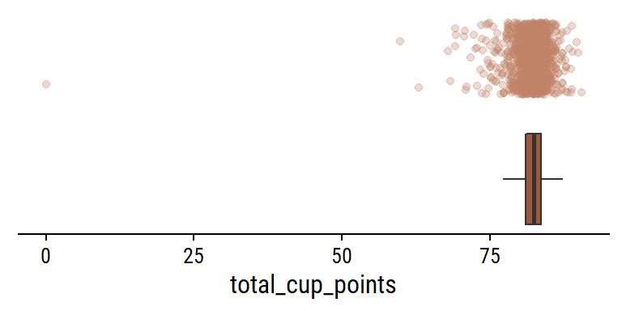
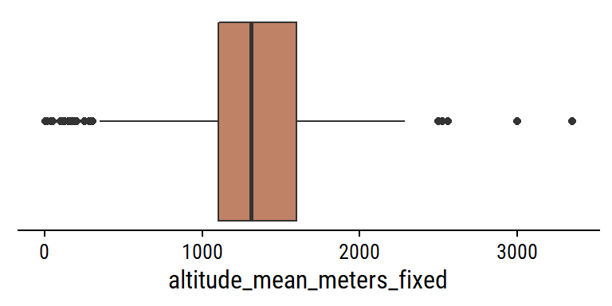

Setup
knitr::opts_chunk$set(echo = TRUE)
library(tidyverse)
library(tidytuesdayR)
library(gt)
library(rmarkdown)
library(patchwork)
library(dunnr)
extrafont::loadfonts(device = "win", quiet = TRUE)
theme_set(theme_td())
set_geom_fonts()
# A coffee themed palette I found here: https://colorpalettes.net/color-palette-4281/
#set_palette()
coffee_pal <- c("#a0583c", "#c08267", "#ccb9b1", "#616063", "#212123")
options(ggplot2.discrete.color = coffee_pal,
ggplot2.discrete.fill = coffee_pal)
Load the data
tt <- tidytuesdayR::tt_load("2020-07-07")
Downloading file 1 of 1: `coffee_ratings.csv`# Check out the README
tt
These data were scraped by James LeDoux in 2018 from the Coffee Quality Institute (see the original data here).
Data exploration
coffee <- tt$coffee_ratings
For my own convenience, I’ve copied data dictionary below:
| variable | class | description |
|---|---|---|
| total_cup_points | double | Total rating/points (0 - 100 scale) |
| species | character | Species of coffee bean (arabica or robusta) |
| owner | character | Owner of the farm |
| country_of_origin | character | Where the bean came from |
| farm_name | character | Name of the farm |
| lot_number | character | Lot number of the beans tested |
| mill | character | Mill where the beans were processed |
| ico_number | character | International Coffee Organization number |
| company | character | Company name |
| altitude | character | Altitude - this is a messy column - I’ve left it for some cleaning |
| region | character | Region where bean came from |
| producer | character | Producer of the roasted bean |
| number_of_bags | double | Number of bags tested |
| bag_weight | character | Bag weight tested |
| in_country_partner | character | Partner for the country |
| harvest_year | character | When the beans were harvested (year) |
| grading_date | character | When the beans were graded |
| owner_1 | character | Who owns the beans |
| variety | character | Variety of the beans |
| processing_method | character | Method for processing |
| aroma | double | Aroma grade |
| flavor | double | Flavor grade |
| aftertaste | double | Aftertaste grade |
| acidity | double | Acidity grade |
| body | double | Body grade |
| balance | double | Balance grade |
| uniformity | double | Uniformity grade |
| clean_cup | double | Clean cup grade |
| sweetness | double | Sweetness grade |
| cupper_points | double | Cupper Points |
| moisture | double | Moisture Grade |
| category_one_defects | double | Category one defects (count) |
| quakers | double | quakers |
| color | character | Color of bean |
| category_two_defects | double | Category two defects (count) |
| expiration | character | Expiration date of the beans |
| certification_body | character | Who certified it |
| certification_address | character | Certification body address |
| certification_contact | character | Certification contact |
| unit_of_measurement | character | Unit of measurement |
| altitude_low_meters | double | Altitude low meters |
| altitude_high_meters | double | Altitude high meters |
| altitude_mean_meters | double | Altitude mean meters |
A lot of variables to consider here. Summarize them with skimr:
skimr::skim(coffee)
| Name | coffee |
| Number of rows | 1339 |
| Number of columns | 43 |
| _______________________ | |
| Column type frequency: | |
| character | 24 |
| numeric | 19 |
| ________________________ | |
| Group variables | None |
Variable type: character
| skim_variable | n_missing | complete_rate | min | max | empty | n_unique | whitespace |
|---|---|---|---|---|---|---|---|
| species | 0 | 1.00 | 7 | 7 | 0 | 2 | 0 |
| owner | 7 | 0.99 | 3 | 50 | 0 | 315 | 0 |
| country_of_origin | 1 | 1.00 | 4 | 28 | 0 | 36 | 0 |
| farm_name | 359 | 0.73 | 1 | 73 | 0 | 571 | 0 |
| lot_number | 1063 | 0.21 | 1 | 71 | 0 | 227 | 0 |
| mill | 315 | 0.76 | 1 | 77 | 0 | 460 | 0 |
| ico_number | 151 | 0.89 | 1 | 40 | 0 | 847 | 0 |
| company | 209 | 0.84 | 3 | 73 | 0 | 281 | 0 |
| altitude | 226 | 0.83 | 1 | 41 | 0 | 396 | 0 |
| region | 59 | 0.96 | 2 | 76 | 0 | 356 | 0 |
| producer | 231 | 0.83 | 1 | 100 | 0 | 691 | 0 |
| bag_weight | 0 | 1.00 | 1 | 8 | 0 | 56 | 0 |
| in_country_partner | 0 | 1.00 | 7 | 85 | 0 | 27 | 0 |
| harvest_year | 47 | 0.96 | 3 | 24 | 0 | 46 | 0 |
| grading_date | 0 | 1.00 | 13 | 20 | 0 | 567 | 0 |
| owner_1 | 7 | 0.99 | 3 | 50 | 0 | 319 | 0 |
| variety | 226 | 0.83 | 4 | 21 | 0 | 29 | 0 |
| processing_method | 170 | 0.87 | 5 | 25 | 0 | 5 | 0 |
| color | 218 | 0.84 | 4 | 12 | 0 | 4 | 0 |
| expiration | 0 | 1.00 | 13 | 20 | 0 | 566 | 0 |
| certification_body | 0 | 1.00 | 7 | 85 | 0 | 26 | 0 |
| certification_address | 0 | 1.00 | 40 | 40 | 0 | 32 | 0 |
| certification_contact | 0 | 1.00 | 40 | 40 | 0 | 29 | 0 |
| unit_of_measurement | 0 | 1.00 | 1 | 2 | 0 | 2 | 0 |
Variable type: numeric
| skim_variable | n_missing | complete_rate | mean | sd | p0 | p25 | p50 | p75 | p100 | hist |
|---|---|---|---|---|---|---|---|---|---|---|
| total_cup_points | 0 | 1.00 | 82.09 | 3.50 | 0 | 81.08 | 82.50 | 83.67 | 90.58 | ▁▁▁▁▇ |
| number_of_bags | 0 | 1.00 | 154.18 | 129.99 | 0 | 14.00 | 175.00 | 275.00 | 1062.00 | ▇▇▁▁▁ |
| aroma | 0 | 1.00 | 7.57 | 0.38 | 0 | 7.42 | 7.58 | 7.75 | 8.75 | ▁▁▁▁▇ |
| flavor | 0 | 1.00 | 7.52 | 0.40 | 0 | 7.33 | 7.58 | 7.75 | 8.83 | ▁▁▁▁▇ |
| aftertaste | 0 | 1.00 | 7.40 | 0.40 | 0 | 7.25 | 7.42 | 7.58 | 8.67 | ▁▁▁▁▇ |
| acidity | 0 | 1.00 | 7.54 | 0.38 | 0 | 7.33 | 7.58 | 7.75 | 8.75 | ▁▁▁▁▇ |
| body | 0 | 1.00 | 7.52 | 0.37 | 0 | 7.33 | 7.50 | 7.67 | 8.58 | ▁▁▁▁▇ |
| balance | 0 | 1.00 | 7.52 | 0.41 | 0 | 7.33 | 7.50 | 7.75 | 8.75 | ▁▁▁▁▇ |
| uniformity | 0 | 1.00 | 9.83 | 0.55 | 0 | 10.00 | 10.00 | 10.00 | 10.00 | ▁▁▁▁▇ |
| clean_cup | 0 | 1.00 | 9.84 | 0.76 | 0 | 10.00 | 10.00 | 10.00 | 10.00 | ▁▁▁▁▇ |
| sweetness | 0 | 1.00 | 9.86 | 0.62 | 0 | 10.00 | 10.00 | 10.00 | 10.00 | ▁▁▁▁▇ |
| cupper_points | 0 | 1.00 | 7.50 | 0.47 | 0 | 7.25 | 7.50 | 7.75 | 10.00 | ▁▁▁▇▁ |
| moisture | 0 | 1.00 | 0.09 | 0.05 | 0 | 0.09 | 0.11 | 0.12 | 0.28 | ▃▇▅▁▁ |
| category_one_defects | 0 | 1.00 | 0.48 | 2.55 | 0 | 0.00 | 0.00 | 0.00 | 63.00 | ▇▁▁▁▁ |
| quakers | 1 | 1.00 | 0.17 | 0.83 | 0 | 0.00 | 0.00 | 0.00 | 11.00 | ▇▁▁▁▁ |
| category_two_defects | 0 | 1.00 | 3.56 | 5.31 | 0 | 0.00 | 2.00 | 4.00 | 55.00 | ▇▁▁▁▁ |
| altitude_low_meters | 230 | 0.83 | 1750.71 | 8669.44 | 1 | 1100.00 | 1310.64 | 1600.00 | 190164.00 | ▇▁▁▁▁ |
| altitude_high_meters | 230 | 0.83 | 1799.35 | 8668.81 | 1 | 1100.00 | 1350.00 | 1650.00 | 190164.00 | ▇▁▁▁▁ |
| altitude_mean_meters | 230 | 0.83 | 1775.03 | 8668.63 | 1 | 1100.00 | 1310.64 | 1600.00 | 190164.00 | ▇▁▁▁▁ |
Ratings
The key outcome variable is total_cup_points, which is a quality rating 0-100
p <- coffee %>%
ggplot(aes(x = total_cup_points)) +
geom_boxplot(y = 0, fill = coffee_pal[1], outlier.shape = NA) +
geom_jitter(aes(y = 1), color = coffee_pal[2],
alpha = 0.3, height = 0.3, width = 0) +
remove_axis("y")
p

A very obvious outlier at total_cup_points = 0
Rows: 1
Columns: 43
$ total_cup_points <dbl> 0
$ species <chr> "Arabica"
$ owner <chr> "bismarck castro"
$ country_of_origin <chr> "Honduras"
$ farm_name <chr> "los hicaques"
$ lot_number <chr> "103"
$ mill <chr> "cigrah s.a de c.v."
$ ico_number <chr> "13-111-053"
$ company <chr> "cigrah s.a de c.v"
$ altitude <chr> "1400"
$ region <chr> "comayagua"
$ producer <chr> "Reinerio Zepeda"
$ number_of_bags <dbl> 275
$ bag_weight <chr> "69 kg"
$ in_country_partner <chr> "Instituto Hondureño del Café"
$ harvest_year <chr> "2017"
$ grading_date <chr> "April 28th, 2017"
$ owner_1 <chr> "Bismarck Castro"
$ variety <chr> "Caturra"
$ processing_method <chr> NA
$ aroma <dbl> 0
$ flavor <dbl> 0
$ aftertaste <dbl> 0
$ acidity <dbl> 0
$ body <dbl> 0
$ balance <dbl> 0
$ uniformity <dbl> 0
$ clean_cup <dbl> 0
$ sweetness <dbl> 0
$ cupper_points <dbl> 0
$ moisture <dbl> 0.12
$ category_one_defects <dbl> 0
$ quakers <dbl> 0
$ color <chr> "Green"
$ category_two_defects <dbl> 2
$ expiration <chr> "April 28th, 2018"
$ certification_body <chr> "Instituto Hondureño del Café"
$ certification_address <chr> "b4660a57e9f8cc613ae5b8f02bfce8634c763~
$ certification_contact <chr> "7f521ca403540f81ec99daec7da19c2788393~
$ unit_of_measurement <chr> "m"
$ altitude_low_meters <dbl> 1400
$ altitude_high_meters <dbl> 1400
$ altitude_mean_meters <dbl> 1400All of the gradings (aroma, flavor, etc.) are also 0. Remove it:
Show the distribution of the other numerical gradings:
coffee %>%
select(aroma:moisture) %>%
pivot_longer(cols = everything()) %>%
ggplot(aes(x = value)) +
geom_boxplot(y = 0, fill = coffee_pal[1], outlier.shape = NA) +
geom_jitter(aes(y = 1), color = coffee_pal[2],
alpha = 0.3, height = 0.3, width = 0) +
remove_axis("y") +
facet_wrap(~name, ncol = 3)
None of the values are missing, and they all seem to range from 0 to 10, except for moisture:
coffee %>%
ggplot(aes(x = moisture)) +
geom_boxplot(y = 0, fill = coffee_pal[1], outlier.shape = NA) +
geom_jitter(aes(y = 1), color = coffee_pal[2],
alpha = 0.3, height = 0.3, width = 0) +
remove_axis("y")
What is the relationship between the individual gradings and the overall total_cup_points? There are 10 gradings with scores 0-10, so I assume adding them together gives total_cup_points, which ranges 0-100:
coffee %>%
rowwise() %>%
transmute(
total_cup_points,
sum_gradings = sum(c_across(aroma:cupper_points))
) %>%
ggplot(aes(x = total_cup_points, y = sum_gradings)) +
geom_point(color = coffee_pal[1], size = 2) +
geom_abline(size = 1)

Some very slight deviations, but yes my assumption is correct. A second assumption: there will be mostly positive associations among the individual gradings (e.g. a coffee with high flavor will have high body on average). Compute and plot the pairwise correlations with corrr:
coffee %>%
select(aroma:cupper_points) %>%
corrr::correlate(method = "pearson", use = "everything") %>%
corrr::rplot() +
theme(axis.text.x = element_text(angle = 45, vjust = 0.7))

Yes, lots of high correlations. Interestingly, there are three variables in particular (uniformity, clean_cup and sweetness) which correlate moderately with eachother, and weakly with the others. These happen to be the gradings that are almost always 10:
coffee %>%
select(uniformity, clean_cup, sweetness) %>%
pivot_longer(everything()) %>%
group_by(name) %>%
mutate(
name = glue::glue(
"{name} ({scales::percent(mean(value == 10))} values = 10.0)"
)
) %>%
ggplot(aes(x = value, y = 1)) +
geom_jitter(alpha = 0.3, width = 0, color = coffee_pal[3]) +
facet_wrap(~name, ncol = 1) +
remove_axis("y") +
scale_x_continuous(breaks = 0:10)

Categorical variables
There are two species, though Arabica makes up the large majority:
Interesting that Arabica makes up 98% of the data, but ~60% of the coffee produced worldwide, so seems to be over-represented here.
There are 36 countries of origin (1 value missing):
For the most frequent countries, show the distribution of overall ratings:
coffee %>%
mutate(
country_of_origin = country_of_origin %>%
fct_explicit_na() %>%
fct_lump(n = 10) %>%
fct_reorder(total_cup_points)
) %>%
ggplot(aes(y = country_of_origin, x = total_cup_points)) +
geom_boxplot(fill = coffee_pal[3]) +
labs(y = NULL)

Ethiopian coffee has a very clear lead in terms of ratings, while Colombia has very consistently high ratings.
coffee %>%
mutate(
variety = variety %>%
fct_explicit_na() %>%
fct_lump_min(10, other_level = "Other (n<10)")
) %>%
count(variety) %>%
mutate(variety = fct_reorder(variety, n)) %>%
ggplot(aes(y = variety, x = n)) +
geom_col(fill = coffee_pal[2]) +
scale_x_continuous(expand = expansion(mult = c(0, 0.1))) +
labs(y = NULL)
There are two unknown values for variety: “Other” and NA (Missing). These could have different meanings (e.g. an NA value could be a common variety but is just missing) but I will combine both:
in_country_partner has a manageable number of unique values (27)
d <- coffee %>%
mutate(
in_country_partner = fct_lump(in_country_partner, 10)
) %>%
add_count(in_country_partner) %>%
mutate(in_country_partner = fct_reorder(in_country_partner, n))
p1 <- d %>%
distinct(in_country_partner, n) %>%
ggplot(aes(y = in_country_partner, x = n)) +
geom_col(fill = coffee_pal[1]) +
scale_x_continuous(expand = expansion(mult = c(0, 0.1))) +
labs(y = NULL)
p2 <- d %>%
ggplot(aes(y = in_country_partner, x = total_cup_points)) +
geom_boxplot(fill = coffee_pal[2]) +
labs(y = NULL) +
theme(axis.text.y = element_blank())
p1 | p2
The coffee bean color is presumably before roasting:
d <- coffee %>%
add_count(color) %>%
mutate(color = fct_reorder(color, n))
p1 <- d %>%
distinct(color, n) %>%
ggplot(aes(y = color, x = n)) +
geom_col(fill = coffee_pal[1]) +
scale_x_continuous(expand = expansion(mult = c(0, 0.1))) +
labs(y = NULL)
p2 <- d %>%
ggplot(aes(y = color, x = total_cup_points)) +
geom_boxplot(fill = coffee_pal[2]) +
labs(y = NULL) +
theme(axis.text.y = element_blank())
p1 | p2
harvest_year could use some data processing:
d %>%
count(harvest_year, sort = T) %>%
paged_table()
For values like “2013/2014” and "2010-2011, I’ll extract the first year.
coffee <- coffee %>%
mutate(
harvest_year_num = harvest_year %>%
str_extract("\\d{4}")
)
coffee %>%
count(harvest_year, harvest_year_num, sort = T) %>%
paged_table()
It doesn’t work with values like “08/09” because they are not 4 digits, but those values are very low frequency.
The 5 processing_methods:
# A tibble: 6 x 2
processing_method n
<chr> <int>
1 Natural / Dry 258
2 Other 26
3 Pulped natural / honey 14
4 Semi-washed / Semi-pulped 56
5 Washed / Wet 815
6 <NA> 169d <- coffee %>%
add_count(processing_method) %>%
mutate(processing_method = fct_reorder(processing_method, n))
p1 <- d %>%
distinct(processing_method, n) %>%
ggplot(aes(y = processing_method, x = n)) +
geom_col(fill = coffee_pal[1]) +
scale_x_continuous(expand = expansion(mult = c(0, 0.1))) +
labs(y = NULL)
p2 <- d %>%
ggplot(aes(y = processing_method, x = total_cup_points)) +
geom_boxplot(fill = coffee_pal[2]) +
labs(y = NULL) +
theme(axis.text.y = element_blank())
p1 | p2

There are two date variables that I think would be interesting to compare: grading_date and expiration. Parse them as date objects and compute the difference in days:
coffee <- coffee %>%
mutate(
# Convert both to date objects
expiration = lubridate::mdy(expiration),
grading_date = lubridate::mdy(grading_date)
)
coffee %>%
mutate(
days_from_expiration = expiration - grading_date
) %>%
count(days_from_expiration)
# A tibble: 1 x 2
days_from_expiration n
<drtn> <int>
1 365 days 1338Every single grading was (supposedly) done 365 days before expiration. Maybe it is standard procedure that gradings be done exactly one year before expiration. Not sure, but this unfortunately makes it an uninteresting variable for exploration/modeling.
Defects
There are two defect variables (category_one_defects and category_two_defects) and the quakers variable, which are immature/unripe beans.
d <- coffee %>%
mutate(
across(
c(category_one_defects, category_two_defects, quakers),
# Group counts above 5 together
~cut(., breaks = c(0:5, 100), include.lowest = TRUE, right = FALSE,
labels = c(0:4, "5+"))
)
) %>%
select(where(is.factor), total_cup_points) %>%
pivot_longer(cols = -total_cup_points,
names_to = "defect", values_to = "n_defects") %>%
filter(!is.na(n_defects))
p1 <- d %>%
filter(defect == "category_one_defects") %>%
ggplot(aes(y = n_defects)) +
geom_bar(fill = coffee_pal[1]) +
scale_x_continuous(NULL, expand = expansion(c(0, 0.05)))
p2 <- d %>%
filter(defect == "category_one_defects") %>%
ggplot(aes(y = n_defects, x = total_cup_points)) +
geom_boxplot(fill = coffee_pal[3]) +
labs(x = NULL, y = NULL)
(
(p1 + labs(y = "Category 1") | p2)
) /
(
(p1 %+% filter(d, defect == "category_two_defects") +
labs(y = "Category 2") |
p2 %+% filter(d, defect == "category_two_defects"))
) /
(
(p1 %+% filter(d, defect == "quakers") +
labs(y = "Quakers", x = "Count") |
(p2 %+% filter(d, defect == "quakers") +
labs(x = "Total cup points")))
)

Looks to be a slight decline in ratings with increasing category 1 and 2 defects. Not much of an effect with number of quakers.
Altitude
The altitude variable is messy, but looks like it was cleaned via the altitude_*_variables:
coffee %>%
count(
altitude, altitude_mean_meters, altitude_low_meters, altitude_high_meters,
unit_of_measurement, sort = T
) %>%
paged_table()
There are some unit conversions from feet to meters, for example:
coffee %>%
filter(unit_of_measurement == "ft", !is.na(altitude)) %>%
#filter(altitude == "4300") %>%
count(altitude, unit_of_measurement, altitude_mean_meters, sort = T) %>%
# Re-calculate the altitude in feet to see if it matches
mutate(feet_manual = altitude_mean_meters * 3.28) %>%
paged_table()
And re-calculating the altitude in feet, everything looks to be correctly converted.
Look for any obvious outliers:
coffee %>%
filter(!is.na(altitude_mean_meters)) %>%
ggplot(aes(x = altitude_mean_meters)) +
geom_boxplot(y = 0, fill = coffee_pal[2]) +
scale_x_log10() +
remove_axis("y")

Yes, some pretty clear ones. Look at values larger than 3000:
coffee %>%
select(country_of_origin, altitude, unit_of_measurement,
altitude_mean_meters) %>%
arrange(desc(altitude_mean_meters)) %>%
filter(altitude_mean_meters > 2000) %>%
gt()
| country_of_origin | altitude | unit_of_measurement | altitude_mean_meters |
|---|---|---|---|
| Guatemala | 190164 | m | 190164 |
| Guatemala | 1901.64 | m | 190164 |
| Nicaragua | 1100.00 mosl | m | 110000 |
| Brazil | 11000 metros | m | 11000 |
| Myanmar | 4287 | m | 4287 |
| Myanmar | 4001 | m | 4001 |
| Colombia | 1800 meters (5900 | m | 3850 |
| Myanmar | 3845 | m | 3845 |
| Myanmar | 3825 | m | 3825 |
| Myanmar | 3800 | m | 3800 |
| Indonesia | 3500 | m | 3500 |
| Guatemala | 3280 | m | 3280 |
| Guatemala | 3280 | m | 3280 |
| Guatemala | 3280 | m | 3280 |
| India | 3170 | m | 3170 |
| India | 3140 | m | 3140 |
| India | 3000' | m | 3000 |
| United States | 3000' | m | 3000 |
| Colombia | 2.560 msnm | m | 2560 |
| Colombia | 2560 | m | 2560 |
| Colombia | 2527 | m | 2527 |
| Malawi | 2500m | m | 2500 |
| Tanzania, United Republic Of | 2285 | m | 2285 |
| Colombia | 2136 msnm | m | 2136 |
| Colombia | 2136 msnm | m | 2136 |
| United States | meters above sea level: 2.112 | m | 2112 |
| Guatemala | 2100 | m | 2100 |
| United States | meters above sea level: 2.080 | m | 2080 |
| Ethiopia | 1950-2200 | m | 2075 |
| Ethiopia | 1950-2200 | m | 2075 |
| Ethiopia | 1950-2200 | m | 2075 |
| United States | meters above sea level: 2.019 | m | 2019 |
Some helpful frames of reference:
- The elevation of Everest is 8849m.
- The highest point in Guatemala is Tajumulco volcano at 4220m.
- One of the Myanmar coffee producers claims here that their beans are grown at 4000-7000 ft -> 1200-2200m
- Coffee elevations by country:
- Brazil: 1300-5300 ft -> 400-1600 meters
- Guatemala: 3900-6200 ft -> 1200-1900 meters
- Colombia: 2600-6200 ft -> 800-1900 meters
Besides the obvious errors (e.g. 190164 meters), my guess is that many of these measurements are still in feet and need to be converted to meters.
A couple decimal values were incorrectly processed:
coffee %>%
filter(str_detect(altitude, regex("sea", ignore_case = T))) %>%
select(matches("altitu"))
# A tibble: 9 x 4
altitude altitude_low_met~ altitude_high_me~ altitude_mean_me~
<chr> <dbl> <dbl> <dbl>
1 meters above ~ 1872 1872 1872
2 meters above ~ 1943 1943 1943
3 meters above ~ 2080 2080 2080
4 meters above ~ 2019 2019 2019
5 meters above ~ 2112 2112 2112
6 meters above ~ 1941 1941 1941
7 800 meters ab~ 800 800 800
8 1600 + meters~ 1600 1600 1600
9 1400 meter ab~ 1400 1400 1400Look at some of the lowest values:
coffee %>%
select(country_of_origin, altitude, unit_of_measurement,
altitude_mean_meters, producer, country_of_origin) %>%
arrange(desc(altitude_mean_meters)) %>%
filter(altitude_mean_meters <= 10) %>%
gt()
| country_of_origin | altitude | unit_of_measurement | altitude_mean_meters | producer |
|---|---|---|---|---|
| Kenya | -1 | m | 1 | NA |
| Brazil | 1 | m | 1 | Ipanema Agrícola SA |
| Brazil | 1 | m | 1 | Ipanema Agrícola SA |
| Brazil | 1 | m | 1 | Ipanema Agrícola SA |
| Brazil | 1 | m | 1 | Ipanema Agrícola SA |
| Brazil | 1 | m | 1 | Ipanema Agrícola SA |
| Brazil | 1 | m | 1 | Ipanema Agrícola SA |
| Brazil | 1 | m | 1 | Ipanema Agrícola SA |
| Brazil | 1 | m | 1 | Ipanema Agrícola SA |
| Brazil | 1 | m | 1 | Ipanema Agrícola SA |
| Brazil | 1 | m | 1 | Ipanema Agrícola SA |
| Brazil | 1 | m | 1 | Ipanema Agrícola SA |
These are almost certainly incorrect, but there are so few values, I won’t worry about them.
Make a value of “fixed” mean altitude:
coffee <- coffee %>%
mutate(
altitude_mean_meters_fixed = case_when(
altitude == "1800 meters (5900" ~ 1800,
altitude_mean_meters == 190164 ~ 1901,
altitude_mean_meters == 110000 ~ 1100,
str_detect(altitude, "^meters above") ~ altitude_mean_meters / 1000.0,
# Assume anything above 3000 needs to be converted from feet
altitude_mean_meters > 3000 ~ 0.3048 * altitude_mean_meters,
TRUE ~ altitude_mean_meters
)
)
coffee %>%
filter(!is.na(altitude_mean_meters_fixed)) %>%
ggplot(aes(x = altitude_mean_meters_fixed)) +
geom_boxplot(y = 0, fill = coffee_pal[2]) +
#scale_x_log10() +
remove_axis("y")

That is looking a bit better. Plot the relationship between the uni-dimensional ratings and mean altitude:
coffee %>%
select(aroma:cupper_points, altitude_mean_meters_fixed) %>%
filter(!is.na(altitude_mean_meters_fixed)) %>%
pivot_longer(cols = -altitude_mean_meters_fixed,
names_to = "grading", values_to = "score") %>%
ggplot(aes(x = altitude_mean_meters_fixed, y = score)) +
geom_point(alpha = 0.3, color = coffee_pal[2]) +
geom_smooth(method = "loess", formula = "y ~ x", color = coffee_pal[3]) +
facet_wrap(~grading, ncol = 2, scales = "free_y") +
scale_y_continuous(breaks = seq(0, 10, 2))

The ratings are so clustered around the 6-9 range, it is hard to see much of a relationship. There seems to be a bunch in ratings around 1500-2000 meters for a few of the variables. Can we see it in total scores?
coffee %>%
filter(!is.na(altitude_mean_meters_fixed)) %>%
ggplot(aes(x = altitude_mean_meters_fixed, y = total_cup_points)) +
geom_point(alpha = 0.3, color = coffee_pal[2]) +
geom_smooth(method = "loess", formula = "y ~ x", color = coffee_pal[3]) +
scale_y_continuous(breaks = seq(0, 100, 10))

Reproducibility
Session info
setting value
version R version 4.1.2 (2021-11-01)
os Windows 10 x64
system x86_64, mingw32
ui RTerm
language (EN)
collate English_Canada.1252
ctype English_Canada.1252
tz America/Curacao
date 2021-11-14 Git repository
Local: main C:/Users/tdunn/Documents/tdunn
Remote: main @ origin (https://github.com/taylordunn/tdunn)
Head: [e9cd20f] 2021-11-14: Plot in_country_partner